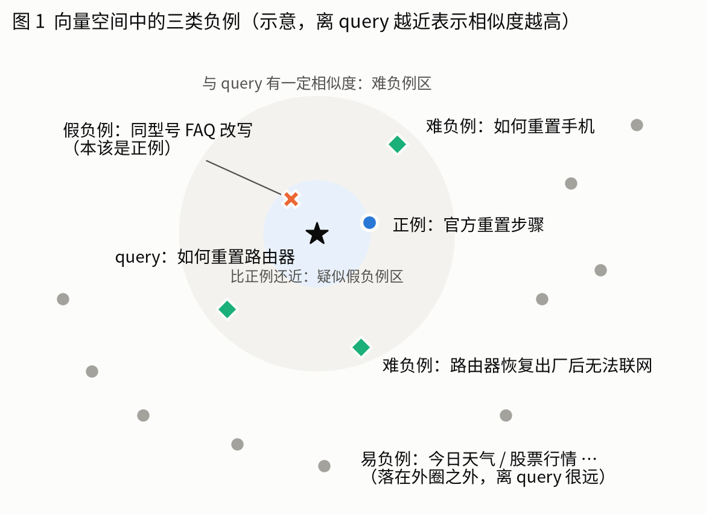
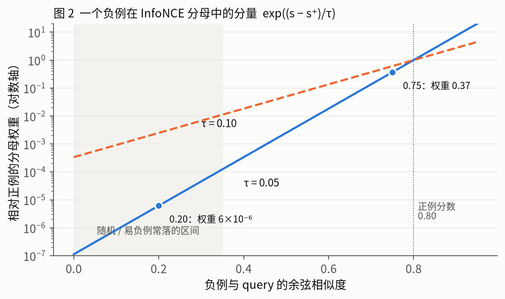
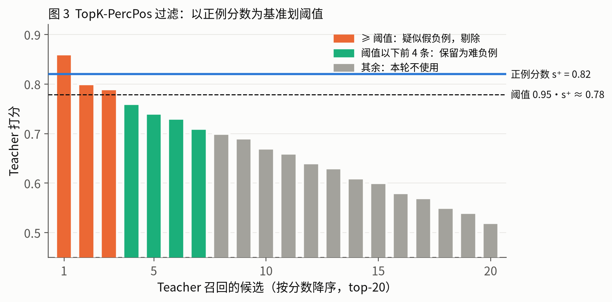
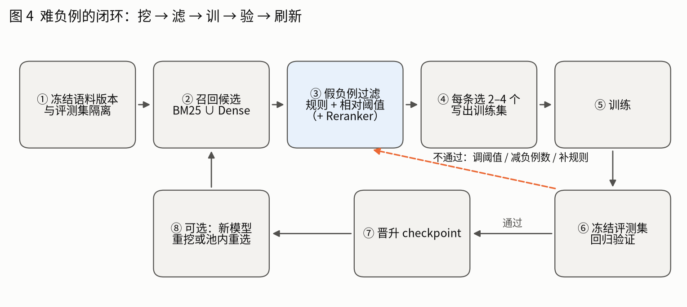

难负例挖掘工业实践¶
读者前提：已读 主文 “Hard Negative Mining”（难负例 / 假负例定义、positive-aware 一层）；理解 InfoNCE / MNRL 在优化候选集上的相对排序。 读完收获：能设计「挖负例 → 过滤 → 训练 → 回归评测 → 刷新」闭环，并给出刷新频率、池大小、每 query 负例数的默认值与调参信号。
挂接主文：Embedding调研报告 “训练方法与数据工程”；与 Embedding 蒸馏专题 §3 / §10 共用同一条候选流水线。
目录¶
1. 为什么难负例是工程问题¶
标准 InfoNCE 的分子是当前正例的指数分数，分母是当前正例与全部负例候选的指数分数之和。难例挖掘改变的是其中负例的来源与质量；候选质量是领域适配的重要因素，应与骨干、数据和训练目标共同评估。
| 负例太「易」 | 负例太「假」 |
|---|---|
| 随机 / 远邻：loss 很快降，决策边界不接触难分区域 | 其实相关却被推开：邻域被撕碎，近义召回 / STS 掉 |
| 验证集 Recall 不涨，train loss 很好看 | train loss 仍降，但业务点击 / Recall@K 倒退 |
与「加大模型」的优先级：多数领域适配应先修好负例与假负例过滤，再堆参数。主文 “实践选型指南” 的「换 8B 无提升」常见根因就是 chunk / instruct / 负例卡在前。
工业上难负例不是一次性预处理脚本，而是：
语料版本 → ANN / BM25 挖候选 → 假负例过滤 → 写出 jsonl（流式、可 resume）
→ 训一轮 → 冻结验证集回归 → 不通过则调阈值/重挖 → 通过则晋升 ckpt
→（可选）用新 Student 重挖 → 再训
下文按这条闭环展开。
2. 定义与损失视角¶
2.1 三类样本¶
| 名称 | 直觉 | 训练中的角色 |
|---|---|---|
| 正例 \(d^+\) | 对当前查询业务判定相关 | 出现在 InfoNCE 分子，也在分母中参与归一化 |
| 难负例 \(d^-\) | 模型易排高、业务判定不相关 | 提供有梯度的分母项 |
| 假负例 | 业务应相关（或高度近似正例），却被标成负 | 破坏语义邻域；应剔除或降权 |
例子（主文复述并细化）：query「如何重置路由器」；正文档 = 官方重置步骤。
- 「如何重置手机」主题近、答案错 → 好难负例。
- 同型号另一篇官方 FAQ 改写被标负 → 假负例，推开会伤召回。
- 「今日天气」→ 太易，几乎不贡献边界学习。

2.2 在 InfoNCE 里看¶
这里 \(s^+=s(q,d^+)\)、\(s_i^-=s(q,d_i^-)\)；分母的正例项不是负例，而是 softmax 归一化的一部分。固定当前查询，正例和负例的梯度方向仍分别是提高和降低相似度。
基础 MNRL 将负例取自同 batch 的其他匹配文档。对 \(\{(q_i,d_i)\}_{i=1}^B\)：
两式相同：\(j=i\) 是当前正例，\(j\ne i\) 是假定负例。若另一篇写 \(d_j^+\)，它表示“\(q_j\) 的正例”，并不表示“所有查询的正例”。只有确认它不回答当前 \(q_i\) 时，才能安全地用作负例；否则应过滤或改为多正例监督。
这与上面的 InfoNCE 只有候选组织不同。完整推导、N-pair 的等价改写及正例梯度解释见对比学习与 InfoNCE 精讲。
- 难负例：\(s_i^-\) 接近 \(s^+\) → 分母项大，梯度集中在「细粒度区分」。
- 假负例：本该 \(s_i^-\) 高却被当负 → 模型被逼把近邻推开，STS / 近义召回变差。
- 只靠 in-batch：便宜，但难例不足 + 近重复进 batch 易造假负例（同文档切块）。
每个负例受到的梯度等于它的 softmax 概率，相对正例的分量是 \(e^{(s^- - s^+)/\tau}\)。\(\tau=0.05\) 时负例分数每比正例低 0.1，分量缩小为 \(1/e^2\approx1/7.4\)；分数 0.2 的随机负例相对 0.8 的正例只剩约 \(6\times10^{-6}\)，几乎不产生梯度。

每 query 显式难负例数：生产起点 2–4（经验值）；未过滤时宁少勿滥。NV-Retriever 在固定每条 4 个负例的条件下比较了多种过滤方法，不过滤的 Naive Top-K 明显最差；注意该消融比较的是「过滤与否」，并未比较负例数量，「2–4」本身没有论文直接支撑。
Multi-Similarity Loss 则属于另一种正负 pair 加权目标。它在有可靠正负标签时，先依据正负相似度的交叠区选择 pair，再分别加权；它既挖难正例也挖难负例，并不直接定义一个全库 ANN 刷新策略。两者可在候选构造层互补，但 MS 公式不是“去掉正例分母的 InfoNCE”。见MS Loss 机制与公式。
2.3 与蒸馏的交界¶
CE / 大 Embedding Teacher 既可打 软标签（蒸馏），也可提供 hard neg 候选（本文）。两条路共用「候选集」；假负例过滤同时服务 KD 与 MNRL（见蒸馏专题 §3、§10）。
❓MNRL 是啥
答： MNRL = Multiple Negatives Ranking Loss，sentence-transformers 里 MultipleNegativesRankingLoss 的简称。它就是 §2.2 那条 InfoNCE 的「批内」形态：一批 \(n\) 条 \((q_i, d_i^+)\)，算第 \(i\) 条时把同批其他样本的正文档 \(d_j^+\) 全当作负例，
几个容易混的点：
- 名字里的 "multiple negatives" 指的是同批其他样本充当了多个负例，不是指你显式挖出来的难负例。
- 出处是 Henderson et al. (2017) 的 batch softmax；van den Oord et al. (2018) 的 InfoNCE 是同一个形式，所以本文把两个名字当同义词用。
- sentence-transformers 的实现默认余弦相似度 +
scale=20，即 \(\tau = 1/20 = 0.05\)，正好落在 §5.2 建议的 \(\tau \in [0.01, 0.05]\) 上界。 - 它可以吃显式难负例：训练样本从 \((q, d^+)\) 两列扩成 \((q, d^+, d_1^-, d_2^-, \ldots)\) 多列，难负例就进同一个分母。配方 A 第 4 步「MNRL + 显式 neg」是这个用法；§4.1 表里「In-batch｜…｜MNRL 默认」说的是不给额外列时的退化情形。两者是同一个损失的两种喂法，不是两种损失。
和 MarginMSE 的分工见 GPL详解「两个损失」一节：MNRL 只认 0/1，难负例会伤它；MarginMSE 拟合教师分差，能吸收「其实有点相关」的负例。
3. 假负例：定义、检测、治理¶
假负例是难负例工程里第一优先级的风险。过滤比「挖更多」更重要。
3.1 来源¶
| 来源 | 机制 |
|---|---|
| 标注不全 | 多答案 / 多 FAQ 变体只标了一条正例，其余进负例池 |
| Teacher 过强 | Teacher top-k 里混入真实相关但未标注的 doc |
| 近重复 | 同文切块、翻译对、改写对进同一负例集或同一 batch |
| 业务规则缺失 | 同 SKU、同条款号、同实体别名应禁入负例 |
3.2 治理手段（按成本）¶
| 手段 | 做法 | 成本 | 何时用 |
|---|---|---|---|
| Positive-aware 阈值 | 丢弃 \(s(q,d^-) \ge s(q,d^+) - m\) 或 \(s^- \ge \alpha\, s^+\) 的候选 | 低 | 默认必开（见 §3.3） |
| 规则 / 词典 | 同实体、同 SKU、同条款号、同 doc_id 族禁入 | 低 | 电商 / 法规 / FAQ |
| CE 二次过滤 | Cross-Encoder 复查 Teacher 候选；低于阈值才入负例 | 中 | 标注稀、Teacher 噪声大 |
| 去重 | MinHash / embedding 近邻 / 同父文档切块分桶 | 低–中 | 长文档 RAG |
| 人工抽检 | 每轮挖取后抽 \(N\) 条（如 50–200）标「真难 / 假负 / 太易」 | 高 | 上线前、阈值变更后 |
3.3 Positive-aware：可落地默认值¶
以 Teacher（Embedding 或 CE）对 \((q,d^+)\) 与候选负例打分为前提。
TopK-MarginPos（NV-Retriever）：
起点：\(m = 0.05\)（cosine 空间）。\(m\) 过大 → 难例被滤光；\(m\) 过小 → 假负例漏网。
TopK-PercPos（同文；论文消融中 \(\alpha=0.95\) 略优于 MarginPos \(m=0.05\)）：
起点：\(\alpha = 0.95\)。超过 95% 正分的候选，训练上往往有害。

| 旋钮 | 起点 | 调参信号 |
|---|---|---|
| \(m\) / \(\alpha\) | 0.05 / 0.95 | 假负例抽检多 → 更严（\(m\uparrow\) 或 \(\alpha\downarrow\)）；难例不够、Recall 不涨 → 略松 |
| Teacher top-\(K\) 挖取 | 50–100 | 过滤后每 query 目标保留 2–4 条 |
| CE 阈值 | 在验证子集上扫 | CE 分尺度因模型而异，禁止照搬绝对分 |
伪代码（挖取后过滤）：
for each query q with positive d+:
s_pos = teacher.score(q, d+)
cands = teacher.retrieve(q, top_k=K) \ {d+}
hard = []
for d in cands:
if rule_forbidden(q, d): continue # SKU / 条款 / 同 doc 族
if teacher.score(q, d) >= alpha * s_pos: continue # PercPos
# 可选: if ce.score(q, d) >= ce_thresh: continue
hard.append(d)
keep first N (2–4) from hard ordered by teacher.score descending
write (q, d+, hard) # 流式 append jsonl
4. 挖取算法菜单¶
按下表选型；生产常 组合（BM25 ∪ Dense Teacher → positive-aware 过滤）。
4.1 总表¶
| 方法 | 机制 | 难例质量 | 假负例风险 | 工程成本 | 代表 |
|---|---|---|---|---|---|
| Random | 均匀采样 | 低 | 低 | 极低 | 弱监督 Stage 1 |
| In-batch | 同 batch 他人正文档作负 | 中（随 batch） | 中（近重复） | 极低 | MNRL 默认 |
| BM25 top-k | 词法近邻 | 词法难、语义易漏 | 中 | 低 | DPR 早期、Hybrid 补丁 |
| Dense Teacher top-k | 语义近邻 | 高 | 高（需过滤） | 中 | E5/BGE/NV 族 |
| CE 重排后挖 | Teacher 召回 + CE 序 | 很高 | 中（CE 也有错） | 高 | RocketQA 思路 |
| ANCE 异步 | 用过期 checkpoint 建 ANN，周期性刷新 | 高（跟随学生） | 高 | 高 | ANCE (2021) |
| Dynamic（训中替换） | 难例变「易」则从池中换新 | 持续难 | 中 | 中–高 | Conan-embedding |
| Cross-GPU / 全局负例池 | 跨卡 gather 扩大分母 | 扩池 | 同 in-batch | 中 | Conan Cross-GPU Loss |
| Curriculum | 先易后难（逐步提高挖取强度） | 可控 | 中 | 中 | 领域冷启动 |
4.2 机制要点（别只记名字）¶
BM25：便宜、可解释；对「同义改写」难例弱。适合作为 Dense 候选的并集，不是唯一来源。
Dense Teacher top-k：质量上限 ≈ Teacher 排序能力。Teacher 过强且标注不全 → 假负例尖峰。务必接 §3.3。
ANCE（Approximate nearest neighbor Negative Contrastive Estimation）：
训练中用 异步更新的 ANN 索引（来自较旧的 student 权重）挖难负例，避免每步重编全库。要点是 索引滞后：太旧 → 挖到的已不再难；太勤 → 算力炸。工业默认见 §5.3。深读：ANCE详解.md。
NV-Retriever（positive-aware） 深读：NV-Retriever详解.md。正例文本侧 LLM 增强见 LLM-DA文本行人检索数据增强详解.md。
Dynamic Hard Negative Mining（Conan）：
预处理挖一批候选池；训练中监控 \(s(q,d^-)\)，若难度掉到阈值以下则从池中换新。v1 每 100 step 检查一次：负例当前平均分 × 1.15 仍低于初始分、且绝对值 < 0.8 时，按名次顺延从池中换新（v1 论文正文与图 2 图注均为 100 step；v2 论文回顾时写作「every 1k steps」，与 v1 原文不一致，以 v1 原文为准）。v2 改为在每次计算 loss 时顺带缓存各负例的当前分数，判据改为 × 1.2 且 < 0.7，不增加额外检索开销。适合「池已挖好、希望全程保持难度」。
Cross-GPU 负例：多卡时 all_gather 文档向量，扩大 in-batch 负例。注意：多任务混合时要 按任务平衡 batch，否则检索被 STS 稀释（Conan Cross-GPU balancing loss 的动机）。
Curriculum：冷启动领域先 BM25 / 弱过滤 → 验证平台期后再收紧 positive-aware、提高 Teacher 强度。避免第一天就用「最难未过滤 top-20」。
4.3 谁当 Teacher？¶
| Teacher | 优点 | 风险 |
|---|---|---|
| 同族更大 Embedding（如 8B 挖给 0.6B） | 同模板、同空间直觉 | 分布过近，难例偏「微调误差」 |
| 跨系列强检索模型 | 难例更多样 | instruct / 归一化不一致 |
| Cross-Encoder | 细粒度准 | 贵；分尺度与 Bi 不同 |
| 集成（BM25 + Dense + CE） | 覆盖词法+语义 | 工程复杂；权重要验 |
默认推荐（领域 Stage 2）：BM25 top-50 ∪ Dense-Teacher top-50 → PercPos(\(\alpha\)=0.95) → 每 query 留 2–4 → 可选 CE 抽检 10% 样本调阈值。
5. 流水线与刷新策略¶
5.1 端到端流水线¶
1. 冻结「挖取语料」版本号（与验证 / 测试 doc 隔离）
2. 建 / 更新 BM25 + Dense ANN（Teacher 或当前 Student）
3. 批量挖候选（按 query 分片；边写边 flush）
4. 规则过滤 + positive-aware（+ 可选 CE）
5. 写出 training jsonl：{"query","positive","negatives":[...],"meta":{...}}
支持 --resume（跳过已完成 query_id）
6. 训练 1 轮（或固定 steps）
7. 领域验证集回归（§6）
8. 不通过 → 调 α/m、减 neg 数、加强规则；重挖或只重滤
通过 → 晋升 checkpoint；决定是否用新权重重挖（§5.3）

流式落盘：百万级 query 禁止等全量挖完再写；分片 flush + resume 是硬要求（与 modelforge 数据脚本约定一致）。
5.2 参考超参（文本检索领域适配）¶
| 项 | 默认 | 说明 |
|---|---|---|
| 挖取 Teacher top-\(K\) | 50–100 | 过滤前 |
| 过滤后 neg / query | 2–4 | 显式难负例；另加 in-batch |
| PercPos \(\alpha\) | 0.95 | 或 MarginPos \(m\)=0.05 |
| BM25 并集 | 开 | 补词法难例 |
| 同 doc 切块 | 禁入互为负例 | RAG 必备 |
| batch size | 尽量大 | 扩 in-batch；注意去重分桶 |
| \(\tau\) | 0.01–0.05 | 与主文 “旋钮与判据” 一致 |
5.3 刷新节奏：何时重挖？¶
| 策略 | 做法 | 适用 |
|---|---|---|
| 静态一次 | 训前挖完，全程固定 | 小数据、快速实验 |
| 按 epoch / 数据版本 | 每 1 epoch 或语料大版本更新后重挖 | 中等语料；实现简单 |
| 按 step（ANCE 风格） | 每 \(N\) steps 用当前（或 lagged）权重更新 ANN 再挖 | 大数据；要算力 |
| 池内动态替换（Conan） | 候选池固定，训中换「已变易」的 neg | 已有大候选池 |
推荐默认（领域微调，单机 / 少卡）：
- 训前：Teacher 挖 + PercPos，写出 v1 负例文件。
- 训练至验证平台期（或 0.5–1 epoch）。
- 用当前 Student 重挖一版 v2（同样 PercPos），再训到收敛。
- 语料有大更新时：必须重挖；仅超参微调可不挖。
\(N\) 的经验：全库 ANN 更新成本高时，取「验证集连续两次无提升」再触发重挖，而不是死板每 1k step。Conan 式池内替换可作为 不重编全库 的折中。
❓使用Embedding+Rerank挖掘的话，不好更新吧？
答： 直觉是对的，但「不好更新」只对其中一级成立。两级的刷新成本结构完全不同：
| 阶段 | 刷新成本 | 随什么增长 |
|---|---|---|
| 一级：Embedding 编库 + 建 ANN | 贵 | \(O(\lvert\text{语料}\rvert)\)——要重编全库、重建索引 |
| 二级：Reranker / CE 打分 | 便宜得多 | \(O(\lvert\text{query}\rvert \times K)\)——只对成对候选打分，与语料规模无关 |
CE 从不碰全库，只对 \((q, \text{候选})\) 逐对打分。所以真正难更新的是一级的全库重编，不是 rerank 这一步。
由此得到的做法是把「挖候选」和「选负例」解耦：
- 一级一次挖宽：top-\(K\) 取到 100–200（远宽于最终要用的 2–4 条），冻结成候选池，连教师分一起落盘（§5.5 的
negatives[].score）。 - 之后的刷新尽量变成池内重选：换 \(\alpha\)、换 CE 阈值、把「已变易」的负例换掉，都只在这个固定池上重算，不动 ANN。这正是 §5.3 表里「池内动态替换（Conan）」以及上面那句「Conan 式池内替换可作为不重编全库的折中」的含义。
- 只有两种情况才付全库重编的钱：语料大版本更新，或验证集连续两次无提升。
- ANCE 是另一条路：索引用滞后的 student 权重异步重建，不要求与当前 step 同步——代价是挖到的难例略微过期。
三个落地细节：
- 若用 Student 重挖，必须用 Student 重编全库才自洽。想省钱可以只重挖语料子集，或只重挖「负例已变易的那批 query」，而不是全量。
- CE 的「便宜」是相对的：\(K=50\)、10 万 query 就是 500 万对，一次性可接受，但不适合每 1k step 跑。常见折中是让 CE 只在抽样子集上校准阈值（§3.3 表末行、§4.3 的「可选 CE 抽检 10%」），全量过滤仍交给 positive-aware。
mine.teacher和mine.corpus_version（§5.5）要分别记录，否则事后分不清某版负例的变化来自「换了 Teacher」还是「换了语料」。
5.4 与多任务采样的比例¶
混合 Retrieval + STS + Classification 时：
-
显式难负例 只挂在检索样本上；STS 对不要塞检索 hard neg。
- ❓为什么？
答： 因为两者的标签语义和损失形状都不一样，塞进去等于往 STS 里注入标注噪声。
- 损失里没有这个槽位。 检索样本走 InfoNCE / MNRL，形状是「1 正 + 一堆负」的排序目标；STS 对走 CosineSimilarityLoss 一类的回归目标，标签是 0–5 的连续相似度，一对就是一对，没有「负例列表」可挂。
- 「不相关」≠「不相似」。 检索难负例的定义是「模型易排高、但不回答这条 query」，它在文本上往往和正例高度相似——§2.1 的「如何重置手机」就是这样。把它当成 STS 的低分对，等于断言「这两句近义文本相似度低」，而这恰恰是 §3 要防的假负例伤害，还直接打在衡量语义邻域的那个目标上。
- 关系的方向性不同。 检索的 relevance 是 query→doc 的非对称、主题性关系；STS 的 similarity 是对称、分级关系。同一对文本在两种关系下的标签可以合法地相反，混用必然自相矛盾。
后果就是 §9 第二行的「loss↓ Recall↓、STS↓」：两个目标互相拆台，而 STS 通常先塌。所以 STS 要难例时，应该取分级标注里本来就有的中低分对，而不是从检索挖来的负例。
-
检索样本占比过低 → hard neg 工程白做；起点检索 ≥50% 步数（再按验证调）。
-
Cross-GPU 扩负例时按任务 平衡有效 batch，避免 STS 批次吞掉检索负例池。
- ❓意思是任务各自组batch为好？
答： 一半对。准确说是 batch 内按任务同质，但同一个优化步里两个任务都在场——「分桶，不分步」。
Conan 的 CBB（见 Conan-embedding详解 的 CBB 一节）明确反对「每个 iteration 随机抽一种任务」：那样单步的搜索方向和全局目标不一致，loss 震荡、两任务不同步下降（原文 Figure 4：分开训的 retri+STS 终值约 0.38，CBB 约 0.08）。它的做法是在同一个 forward–loss–backward 周期内：
- 检索：若干卡共享同一批 \((q, d^+)\)，但各卡持有不同的难负例，聚合后相当于把分母扩大约 \(N\) 倍（\(N\) = 共享该正对的卡数）；
- STS：另一（组）卡跑自己更大的 batch，吃更多成对比较；
- 总损失 \(\mathcal{L}_{\mathrm{CBB}} = \mathcal{L}_{\text{InfoNCE}} + \beta\,\mathcal{L}_{\cos}\)，经验 \(\beta = 0.8\)。
所以三件事要分开记：
问题 答案 检索样本和 STS 样本混进同一个 batch？ 不要。各任务各自组 batch、各自占卡 all_gather跨任务收负例？不要。只在持有同类任务的卡之间 gather，否则就是 §9 的「多卡更差｜跨任务假负例｜按任务分桶 gather」 每步只训一个任务、交替进行？ 也不要，这是 Conan 的反面教材。两任务应进同一次更新 顺带澄清本节一处容易混的地方：任务比例在哪一层控制，取决于你用哪种方案。按步采样（简单，单卡或不做 CBB）时，比例体现在上一条的「检索 ≥50% 步数」；用 CBB 时每步都有检索，比例体现在每个任务分到的卡数 / batch 大小。两种口径本节都出现了，不要同时按两套算。另外用梯度累积时，一个累积窗口内也要保持任务同质，否则有效 batch 又被混回去了。
5.5 数据格式建议¶
{
"query_id": "q_123",
"query": "...",
"positive_id": "d_9",
"positive": "...",
"negatives": [{"id": "d_2", "text": "...", "score": 0.71}],
"mine": {
"teacher": "bge-m3",
"alpha": 0.95,
"corpus_version": "2026-07-01",
"created_at": "..."
}
}
corpus_version 必须可追溯；晋升模型时记录「用的哪一版负例文件」。
6. 验证与回归协议¶
挖负例 / 换阈值 没有验证集回归，等于盲飞。
6.1 隔离规则（硬约束）¶
- 冻结业务验证集（query + 标注正例 + 可选人工难例）。
- 禁止把验证 / 测试 doc 写入挖负例语料或 Teacher 索引。
- 挖取用语料与线上索引版本号对齐；报告里写清版本。
6.2 每次晋升必报的指标¶
| 指标 | 作用 |
|---|---|
| Recall@K / nDCG@K（主） | 检索是否真的好 |
| STS 或近义对准确率 | 防空间塌缩（假负例过多的信号） |
| 延迟 / 吞吐（可选） | 换 Teacher 挖取不应拖垮训练墙钟到不可用 |
⭐同时看 train loss 与 Recall：loss↓ Recall↓ → 优先查假负例；loss↓ Recall↑ → 负例策略有效。
6.3 A/B 课表¶
| 臂 | 设置 |
|---|---|
| A | 仅 in-batch（无显式 hard neg） |
| B | BM25 hard neg，无 positive-aware |
| C | Dense Teacher + PercPos（推荐基线） |
| D | C + 中期 Student 重挖 |
晋升条件：C/D 在主指标上 ≥ A，且 STS 不显著劣化（团队自定阈值，如相对掉点 < 1–2%）。
6.4 抽检清单（每轮挖取后）¶
随机 100 条 \((q,d^+,d^-)\)：
- \(d^-\) 是否业务不相关？
- 是否同实体 / 同条款漏网？
- 是否「太易」（任何人一看就不相关）占比过高？
目标画像（经验值，非论文结论）：真难 ≈ 60–80%，太易 < 20%，假负 ≈ 0（抽检）。假负 > 5% → 先收紧 \(\alpha\)，再谈加 \(K\)。
7. 多模态补充¶
与主文 “多模态与专用 Embedding”、图文综述四类路线对齐。负例定义随任务变。
❓多模态rerank的话怎么做？
答： 架构上就是把 VLM 当多模态 cross-encoder：query 和候选（图 / 页图 / 视频）拼在一起送进同一个骨干联合编码，输出一个相关性分，只用于小候选集精排，不产出索引向量。
以 Qwen3-VL-Reranker 为例（与同系 Embedding 共用 Qwen3-VL 因果骨干）：
- 输入是 system（约束只回答 yes/no）+ user（含
<Instruct>、<Query>、<Document>），序列停在 assistant 起始位置，随后预测标签； - 它做的是 pointwise 相关性判断，逐对打分再排序；分数实质是 yes 的概率，落在 \([0,1]\)；
- 2B / 8B 两档，32K 上下文，不输出索引向量，因此无法替代一级召回。
放回本节「挖负例」的语境，它的角色和文本侧 CE 完全同构，但有三处不能照搬：
- 分数尺度必须重标定。 yes 概率和 cosine 不是一个量纲，§7.3 那句「不要直接抄 cosine 0.95」在这里同样成立——positive-aware 的 \(\alpha\) / \(m\) 要在验证子集上按它自己的分布重扫。
- 必须与任务同构。 实例级（同款 / 同 SKU）和语义级（同类目）需要的 reranker 不同，这和 §7.1 里「DINO 系 vs CLIP 系」是同一个坑。
- 贵得多，\(K\) 要压小。 图像 / 视频 token 远多于文本，单对成本不可同日而语。实践上让它只负责抽样校准阈值或精排 top 几十，全量过滤仍交给双塔侧的 positive-aware（§3.3）。
更值得照抄的是 Qwen3-VL 那套闭环：Reranker 不只用于线上精排，还反过来给数据挖掘打分（原文 Figure 5 中的绿色箭头表示模型能力回流到数据挖掘），并作为教师把候选集上的相关性分布蒸馏回单向量 Embedding——教师离线给 1 个正例和 \(k\) 个负例打分，学生在线算余弦，两边在同一候选集上做 softmax 后对齐分布。也就是说同一套候选池可以同时服务「挖负例 / 精排 / 蒸馏」三件事，与 §2.3 和配方 B 是同一个思路。
一点边界：文本侧已有 listwise 重排（如 jina-reranker-v3 的一次前向读完整候选列表），多模态侧目前主流仍是上面这种 pointwise 逐对打分，所以成本随 \(K\) 线性增长这一点暂时绕不开。
7.1 图搜图（实例 / 同款）¶
| 风险 | 例子 | 治理 |
|---|---|---|
| 视觉近邻 ≠ 业务相关 | 同色不同款、同背景不同 SKU | 类目 / SKU 规则禁入；用业务 ID 而非纯视觉 Teacher |
| 实例检索 vs 语义检索 | 「同一只猫」vs「都是猫」 | 挖负例的 Teacher 必须与任务同构（DINO 系 vs CLIP 系） |
默认：同品类、不同 SKU 的图作难负例；同 SKU 多图不得互为负例。
7.2 文搜图¶
- Query 侧文本 Teacher 与图像侧视觉 Teacher 谁挖：
- 文搜图主路径：常用 图文双塔 Teacher 对 \((q_{\text{text}}, d_{\text{image}})\) 打分挖负例。
- 仅用文本 Teacher 挖「文本近邻图」会错位。
- 假负例：同一商品多图、营销文案改写对应同款图。
7.3 视觉文档（ColPali 族）¶
- 负例是 页图；词法 BM25 需 OCR 或不适用。
- 假负例：同一 PDF 相邻页、同一表格的裁剪变体。
- 挖取：用当前 Col* Teacher 的 MaxSim 分数做 top-k + positive-aware（阈值按分数尺度重标定，不要直接抄 cosine 0.95）。
8. 两条可照着做的配方¶
配方 A：领域文本 RAG¶
| 步骤 | 动作 |
|---|---|
| 1 | 正对：点击 / 标注 \((q,d^+)\)；语料版本打标 |
| 2 | Teacher：开源强模（如 bge-m3 / e5-large）编库 |
| 3 | 挖：BM25∪Dense top-50 → PercPos 0.95 → 2–4 neg/q |
| 4 | 训：MNRL + 显式 neg；instruct 与线上一致 |
| 5 | 验：Recall@10 + 近义抽检；过则晋升 |
| 6 | 可选：Student 重挖一版再短训 |
配方 B：小 Student + 大 Teacher 蒸馏（与蒸馏专题联动）¶
| 步骤 | 动作 |
|---|---|
| 1 | 同配方 A 挖候选（候选集同时服务 KL） |
| 2 | Teacher 对 \((q,\text{cands})\) 打分 → KL + MNRL |
| 3 | 假负例过滤 先于 蒸馏；脏候选会同时毒害 KD 与对比 |
| 4 | 平台期后 Student 重挖 → 再蒸一轮 |
细节损失权重见 Embedding蒸馏技术详解 §10。
9. 常见训练翻车对照¶
| 现象 | 机制原因 | 动作 |
|---|---|---|
| loss↓ Recall 不动 | 负例太易 / 只有 in-batch | 加 Teacher 难例 |
| loss↓ Recall↓、STS↓ | 假负例过多 | 收紧 PercPos；加规则；减 neg/q |
| 重挖后崩溃 | 新 Teacher/Student 分布突变或 bug | 对比旧负例文件 A/B；检查语料污染 |
| 多卡更差 | Cross-GPU 引入跨任务假负例 | 按任务分桶 gather |
| CE 过滤后无负例 | 阈值按错分尺度 | 在验证子集重标定 CE 阈值 |
| 验证集虚高 | 测试 doc 进了挖取索引 | 重建隔离语料；作废实验 |
| 图搜图同色误伤 | 视觉 Teacher ≠ 业务相关 | SKU/类目约束 |
10. 参考文献¶
- Xiong et al. (2021). Approximate Nearest Neighbor Negative Contrastive Learning for Dense Text Retrieval (ANCE). arXiv:2007.00808
- Qu et al. (2021). RocketQA: An Optimized Training Approach to Dense Passage Retrieval. arXiv:2010.08191
- Moreira et al. (2024). NV-Retriever: Improving text embedding models with effective hard-negative mining. arXiv:2407.15831 — TopK-MarginPos / TopK-PercPos
- Li et al. (2024). Conan-embedding: General Text Embedding with More and Better Negative Samples. arXiv:2408.15710 — Dynamic HN + Cross-GPU；深读 Conan-embedding详解.md
- Li et al. (2025). Conan-Embedding-v2. EMNLP 2025. ACL Anthology — 训中动态替换难负例
- Karpukhin et al. (2020). Dense Passage Retrieval (DPR). arXiv:2004.04906 — in-batch / BM25 负例早期范式
- Wang et al. (2022). Text Embeddings by Weakly-Supervised Contrastive Pre-training (E5). arXiv:2212.03533
- Chen et al. (2024). BGE M3-Embedding. arXiv:2402.03216
- 主文 训练方法与数据工程
- 专题 Embedding 蒸馏技术详解 §3 / §10
附录：与主文 / 蒸馏专题的分工¶
| 文档 | 写什么 | 不写什么 |
|---|---|---|
| 主文 “Hard Negative Mining” | 定义、一层 positive-aware、指向本专题 | 刷新节奏、抽检协议、多模态细则 |
| 本专题 | 假负例治理、挖取菜单、流水线默认值、回归与翻车 | 完整 InfoNCE 推导、蒸馏损失配方 |
| 蒸馏专题 | CE→Bi、KL 权重、与 hard neg 候选共用 | PercPos 调参全过程 |
版本：v1.2 · 2026-11-17 · 补 4 张配图（三类负例、softmax 权重、PercPos 过滤、闭环流水线）；勘误：Conan v1 检查间隔应为 100 step（原写 1k）；NV-Retriever 消融结论的适用范围；PercPos 优劣表述；经验数字标注来源性质。 版本：v1.1 · 2026-10-21 · 补答正文内标注的 5 处 ❓（MNRL 定义、Embedding+Rerank 的刷新成本、STS 为何不挂 hard neg、Cross-GPU 按任务分桶、多模态 rerank）。 版本：v1.0 · 2026-07-22 · 难负例工业实践正文；大纲升级为可照着做的闭环说明。